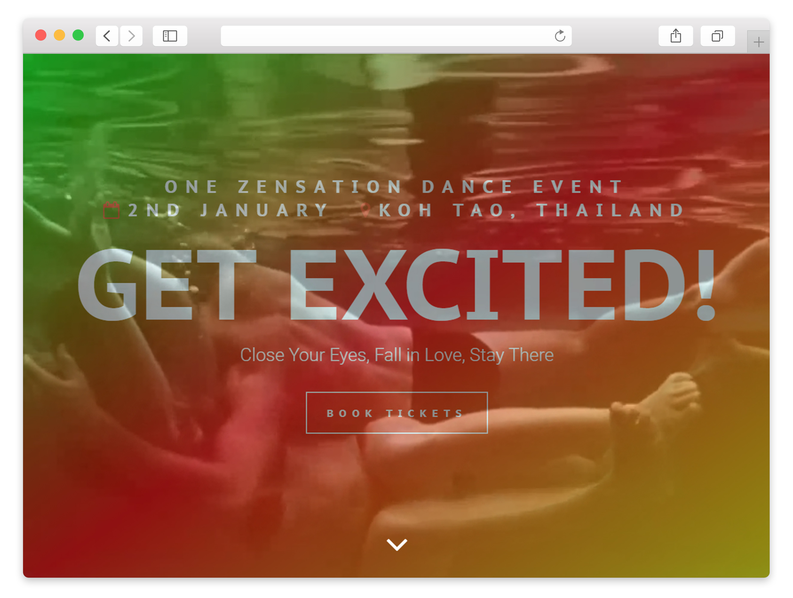

<!doctype html>
<!--[if lt IE 7]>      <html class="no-js lt-ie9 lt-ie8 lt-ie7" lang=""> <![endif]-->
<!--[if IE 7]>         <html class="no-js lt-ie9 lt-ie8" lang=""> <![endif]-->
<!--[if IE 8]>         <html class="no-js lt-ie9" lang=""> <![endif]-->
<!--[if gt IE 8]><!--> <html class="no-js" lang=""> <!--<![endif]-->
    <head>
        <meta charset="utf-8">
        <meta http-equiv="X-UA-Compatible" content="IE=edge,chrome=1">
        <title>Hannah Beck Design</title>
        <meta name="description" content="">
        <meta name="viewport" content="width=device-width, initial-scale=1">
        <link rel="apple-touch-icon" href="apple-touch-icon.png">
        <link href="https://fonts.googleapis.com/css?family=Libre+Baskerville" rel="stylesheet"> 

        <link rel="stylesheet" href="css/fonts.css">
        <link rel="stylesheet" href="css/custom.css">
        <link rel="stylesheet" href="css/grid.css">
        <link rel="stylesheet" href="css/form.css">
        <link rel="stylesheet" href="css/bootstrap-theme.min.css">
        <link rel="stylesheet" href="css/main.css">
        <link rel="stylesheet" href="css/parallax.css">
        <script src="js/vendor/modernizr-2.8.3-respond-1.4.2.min.js"></script>

    </head>
    <body>
            <div class="hero">
            </div>  
            
            <div class="content container-fluid">
                <div class="row">
                    <div class="col-lg-10 offset-lg-1" style="background-color:red">
                        <h1>ZENSATION</h1> 
                        <button type="button" class="btn btn-primary">Visit website</button>
                        <h2>An event website for the a 6 day all-inclusive dance retreat in Koh Tao, Thailand</h2>
                    </div>
                </div>


                    <div class="row">
                        <div class="col-lg-5 offset-lg-1">
                            <h3>PROJECT OVERVIEW</h3>
                            <p>The challenge for this website was to give users a feeling of this unique event in ways that a bullet point list of the in¡nerary simply could not do. This website aims transport users to the Island of Koh Tao with ‘grandmaster Kwok’ to give them a full sensory expereience of this expereince, even from thier home/office.</p>
                        </div>
                        <div class="col-lg-3">
                            <h3>MY INVOLVEMENT</h3>
                            <p>Web designer / developer</p>
                        </div>
                        <div class="col-lg-2">
                            <h3>DATE</h3>
                            <p>2017</p>
                        </div>
                    </div>
                <div class="row">
                    <div class="col-lg-8 offset-lg-1">
                        </img>
                    </div>
                    <div class="col-lg-2">
                        <p>There’s a lot you can communicate with video. I had some excellent video footage from the previous event at my disposal that for me encapsulates many of the defining characteristics of this event, such as connection, relaxation, creativity and empowerment. I utilised this to help trigger the users imagintion about the event from the get go.The gradient overlay helped to tie the series of video clips together and the video to the overarching colour scheme. It also provided adequate contrast for a call to action button  and other high-priority information.</p>
                    </div>
                </div>
                <div class="row">
                    <div class="col-lg-3  offset-lg-1">
                        <p>The itererary is information heavy, and whilst I believe it to be valuable information, maybe it’s not all relevant at first glace. As you’ll see, all information you need is organised within this relatively confined space.A set of icons were developed to denote the type of activity (i.e. workshop, island tour, party) to make it easy to digest the content.</p>
                    </div>
                    <div class="col-lg-7">
                        </img>
                    </div>
                </div>
                <div class="row">
                    <div class="col-lg-8 offset-lg-1">
                        </img>
                    </div>
                    <div class="col-lg-2">
                        <p>It requires a great leap of faith to book tickets to an event in a far off location, therefore a lot of importance was placed on testemonials. Testemonials in both the form of youtube videos and text were included in the page to ensure people will have faith in Kwok and his team that this event will meet, perhaps even exeed, expectations.</p>
                    </div>
                </div>
                <div class="row">
                    <div class="col-lg-3  offset-lg-1">
                        <p>The information about the rooms provided by the accomodation vender was a little confusing. I felt that to prevent users from getting decision paralysis I should clean it up and present it within the event website. I presented the information in a tabbed format making it easy to compare.</p>
                    </div>
                    <div class="col-lg-7">
                        </img>
                    </div>
                </div>
            </div>
        <script src="//ajax.googleapis.com/ajax/libs/jquery/1.11.2/jquery.min.js"></script>
        <script>window.jQuery || document.write('<script src="js/vendor/jquery-1.11.2.min.js"><\/script>')</script>
        <script src="js/parallax.js"></script>
        <script src="js/vendor/bootstrap.min.js"></script>
        <script src="js/main.js"></script>
    </body>
</html>